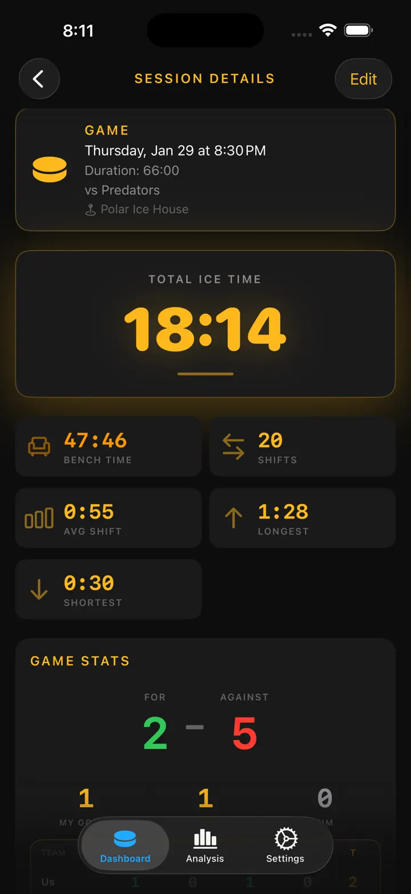

Ice Time Track
Jääkiekko Vaihto Treeni
Automaattinen jääajan seuranta Apple Watchilla – nyt myös varusteiden seuranta ja muistutukset luistinten teroituksesta. Katso vaihdot, tilastot ja terveys.
Lataa App Storesta
Tietoja apista
Vaihtosi. Seurataan automaattisesti.
Ice Time Track käyttää Apple Watchia tunnistaakseen, milloin luistelet ja milloin olet vaihtopenkillä. Ei nappeja, ei vaivaa. Aloita istunto ja pelaa.
MITEN SE TOIMII
Liikkeentunnistusalgoritmi analysoi kiihtyvyysmittarin, gyroskoopin ja GPS-tiedot erottaakseen luistelun levosta. iPhonesi synkronoi päivitykset reaaliajassa, jotta voit tarkastella tilastoja pelin aikana tai jälkeen.
OMINAISUUDET
- Automaattinen vaihtojen tunnistus, liikkeen ja terveysmittareiden seuranta
- Kokonaisjääaika ja vaihtokohtainen erittely
- Peliloki – maalit, jäähyt, erätauot
- Syke ja kalorit per vaihto
- Visuaalinen aikajana jää/penkki-kuviosta
- Istuntohistoria trendeineen
- Sijaintimerkintä jokaiselle hallille
- Peli-, harjoitus- ja harjoituspelitilat
- Valinnaiset haptiset hälytykset
- Vie tiedot CSV- tai JSON-muodossa
APPLE-INTEGRAATIO
Toimii Apple Watchin kanssa. Synkronoituu Apple Terveyteen.
YKSITYISYYS
Kaikki tiedot tallennetaan paikallisesti. Tiliä ei tarvita.
Jääkiekkoilijoiden rakentama jääkiekkoilijoille. Tunne jääaikasi. Nosta pelisi.
Ice Time Track muuttaa Apple Watchisi älykkääksi jääkiekkokumppaniksi, joka tietää tarkalleen, milloin olet jäällä ja milloin penkillä. Ei nappeja. Ei häiriöitä. Puhdasta automaattista seurantaa, jotta voit keskittyä parhaaseen suoritukseesi.
MITEN SE TOIMII
Aloita istunto Apple Watchillasi ja unohda se. Edistynyt liikkeentunnistus analysoi tiedot reaaliajassa. iPhonesi pysyy synkronoituna live-päivityksillä – katso tilastojasi katsomosta tai tarkista kaikki loppusummetin jälkeen.
MITÄ LÖYDÄT
- Kokonaisjääaika — Tiedä tarkalleen, kuinka monta minuuttia vietit siellä, missä se merkitsee
- Vaihtokohtainen Erittely — Jokainen vaihto keston, sykkeen ja kalorien kanssa
- Pelilokit – maalit/jäähyt jaksoittain
- Sykkeen Seuranta — Seuraa ponnistelua luistellessa vs. palautumisessa
- Poltetut Kalorit — Tarkat tiedot synkronoitu Apple Terveydestä
- Istunnon Aikajana — Visuaalinen kaavio jää/penkki-kuviostasi
- Sijaintimuisti — Automaattinen hallin merkintä
- Historialliset Trendit — Vertaa istuntoja ja seuraa edistystä
RAKENNETTU JOKAISELLE LUISTELIJALLE
Pelaatpa harrastesarjaa, treenatpa kovaa tai kilpailetpa harjoituspeleissä – Ice Time Track mukautuu. Merkitse istunnot tyypin mukaan, lisää vastustajien nimet ja rakenna henkilökohtainen jääkiekkopäiväkirjasi.
SAUMATON APPLE-INTEGRAATIO
- Synkronoi harjoitukset Apple Terveyteen
- Toimii taustalla istuntojen aikana
- Valinnaiset haptiset hälytykset jää/penkki-siirtymissä
- Optimoitu vähäiselle akun kulutukselle
YKSITYISYYS ENSIN
Tietosi pysyvät sinun. Tallennettu paikallisesti laitteillesi. Ei tilejä. Tietoja ei myydä. Koskaan.
PELAAJILTA PELAAJILLE
Jääkiekkoharrastajien rakentama, jotka kyllästyivät arvailemaan jääaikaa. Oikeat numerot. Oikeat oivallukset. Nolla kitkaa.
Lataa nyt äläkä enää koskaan ihmettele jääaikaasi.
Sido luistimet. Pudota kiekko. Me hoidamme loput.
Privacy Policy: https://masawata.net/privacy-policy.html Terms Of Service: https://www.apple.com/legal/internet-services/itunes/dev/stdeula/
Näyttökuvat





Ice Time Track
Automaattinen jääajan seuranta Apple Watchilla – nyt myös varusteiden seuranta ja muistutukset luistinten teroituksesta. Katso vaihdot, tilastot ja terveys.
Lataa App Storesta